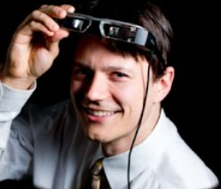

About Me
Jason Orlosky, PhD:
Researcher and DIY Eye Tracking Expert
I am an associate professor, gaze interface researcher, and open-source developer for DIY eye tracking tools. My work connects eye tracking, gaze interaction, Augmented and Virtual Reality, and Artificial Intelligence, and I translate that work into practical tutorials that help students, makers, and researchers build affordable eye trackers.
JEO Research, also styled JEOresearch, is the public-facing name of JEOresearch LLC, founded by Jason Orlosky.

To help support this software and other open-source projects, please consider subscribing to or joining my YouTube channel.
Eye Tracking Expertise
I have worked in the field of eye tracking for over 10 years, assisting with the development of one of the first open-source 3D eye trackers in C++. My peer-reviewed publications span eye-controlled vision augmentation, eye-tracked VR for neurological assessment, gaze-based object manipulation, automated calibration, pupillometry, and gaze-aware interface development.
The goal of my open-source work and DIY tutorials is to make eye tracking more affordable and accessible. My tutorials show how to use inexpensive infrared cameras to build custom eye trackers that rival professional systems. Unlike large companies that keep the technology proprietary, I release all my code on GitHub along with clear instructions on how to build your own system.
Research and Academic Background
I earned a PhD in Information Science and Technology from Osaka University in 2016 and a BS in Computer Engineering from Georgia Tech in 2006. My career includes research and teaching at Augusta University and Osaka University, plus guest research at the German Research Center for Artificial Intelligence combining eye tracking with wearable AR.
My research has been supported by the National Science Foundation, Office of Naval Research, and Japan Society for the Promotion of Science, including an ONR project on vision augmentation using eye-tracked AR. I have served in leadership and committee roles for IEEE VR, IEEE ISMAR, AIVR, VRST, IUI, and ICAT-EGVE and as a reviewer across immersive technology and human-computer interaction research.
Eye Tracking Publications
Selected eye-tracking and gaze-interaction publications appear below. See my complete publications page and Google Scholar profile for the broader record and current citation data.
- Orlosky, J., Liu, C., Sakamoto, K., Sidenmark, L., & Mansour, A. (2024). EyeShadows: Peripheral Virtual Copies for Rapid Gaze Selection and Interaction. IEEE VR.
- Zhao, G., Orlosky, J., Gabbard, J., & Kiyokawa, K. (2023). HazARdSnap: Gaze-based Augmentation Delivery for Safe Information Access while Cycling. IEEE TVCG.
- Sakamoto, K., Shirai, S., Takemura, N., et al. (2023). Subjective Difficulty Estimation of Educational Comics Using Gaze Features. IEICE Transactions.
- Liu, C., Plopski, A., & Orlosky, J. (2020). OrthoGaze: Gaze-based Three-dimensional Object Manipulation using Orthogonal Planes. Computers & Graphics.
- Orlosky, J., Huynh, B., & Höllerer, T. (2019). Using Eye Tracked Virtual Reality to Classify Understanding of Vocabulary in Recall Tasks. IEEE AIVR.
- Orlosky, J., Itoh, Y., Ranchet, M., et al. (2017). Emulation of Physician Tasks in Eye-Tracked Virtual Reality for Remote Diagnosis of Neurodegenerative Disease. IEEE TVCG.
- Ranchet, M., Orlosky, J., Morgan, J., et al. (2017). Pupillary Response to Cognitive Workload during Saccadic Tasks in Parkinson's Disease. Behavioural Brain Research.
- Orlosky, J., Toyama, T., Kiyokawa, K., & Sonntag, D. (2015). ModulAR: Eye-Controlled Vision Augmentations for Head Mounted Displays.
- Toyama, T., Orlosky, J., Sonntag, D., & Kiyokawa, K. (2014). A Natural Interface for Multi-focal Plane Head Mounted Displays Using 3D Gaze. ACM AVI.
- Orlosky, J., Toyama, T., Sonntag, D., & Kiyokawa, K. (2014). Using Eye-Gaze and Visualization to Augment Memory. DAPI.
YouTube Videos
Here are a fiew related videos about DIY eye tracking and the fundamentals behind eye tracking systems:
Awards
- Honorable Mention for Best Paper Presentation, IEEE Virtual Reality, 2024
- Best Poster, IEEE Virtual Reality, 2024
- Outstanding Faculty Award, Augusta University, 2023
- Osaka University Award, 2020
- Boundless Teaching Award, Augusta University, 2020
- ACM TiiS Board of Distinguished Reviewers, 2018
- Best Paper, Augmented Human, 2016
- Best Paper, ACM Intelligent User Interfaces, 2013